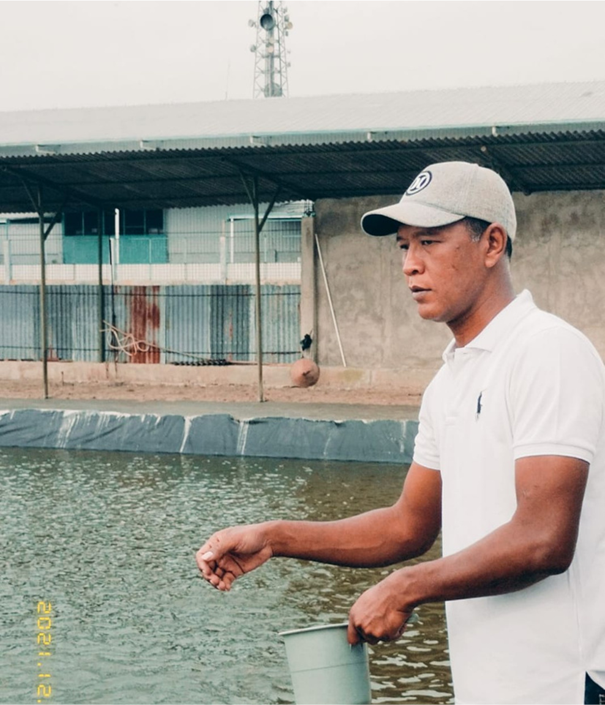

About CV Hidup Barokah
CV Hidup Barokah is a company engaged in various fields. One of them focuses on Fish Pond Farming activities in the Biofloc System. We provide the best quality solutions for fish pond cultivation with modern technology.
We are committed to supporting cultivators in Indonesia to become more advanced by prioritizing superior quality at affordable prices, expert guidance, and work warranty.

Capacity Pool
NILA
100 Ekor/m³
LELE
500-600 Ekor/m³
Our Vision & Mission
Vision
We want cultivators in Indonesia to be more advanced by prioritizing superior quality at affordable prices.
Mission
Providing best quality, affordable pricing, expert guidance, and work warranty to support cultivators in achieving success with Biofloc System technology.
Our Team

Sugiarto
Experts
Our Achievements
200+
Projects Completed
500+
Satisfied Clients
10+
Years of Experience
50+
Professional Team